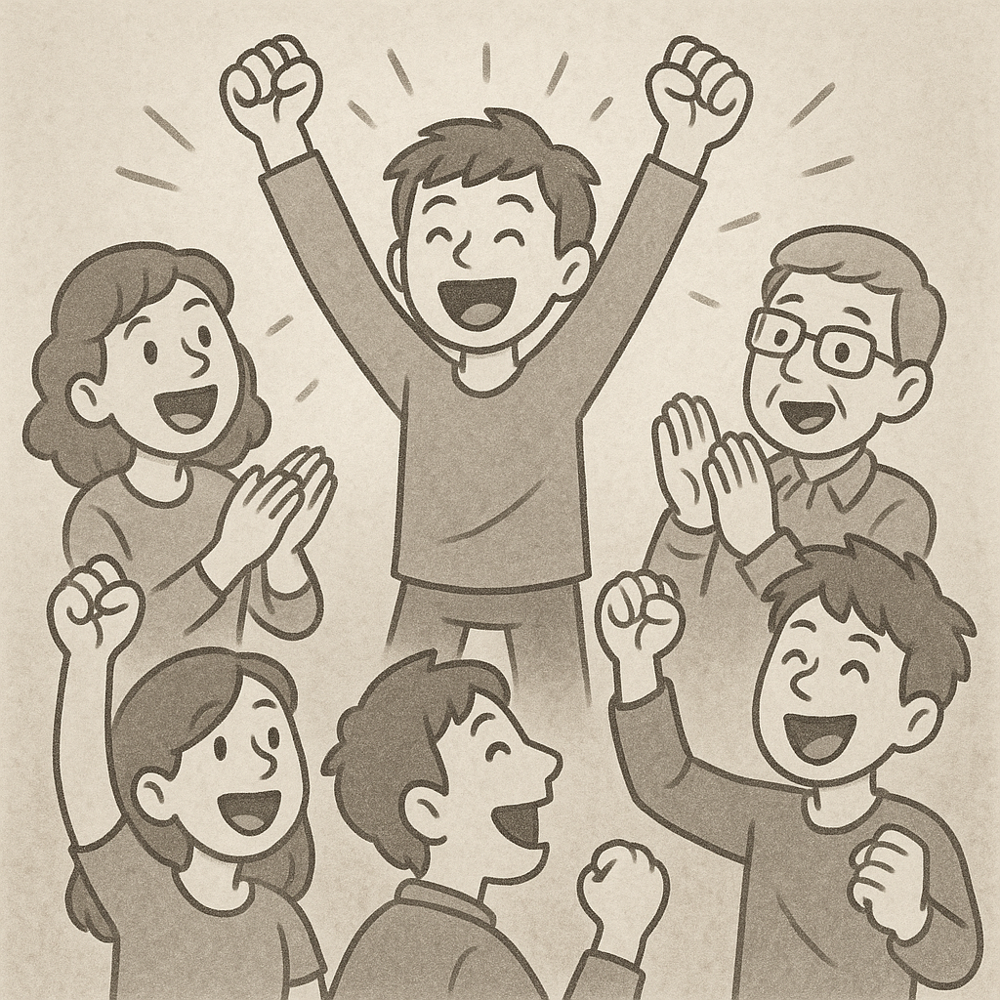

The Power of Genuine Support: Why Championing Others Elevates Us All
In the cybersecurity field where competition for recognition, bug bounties, and career advancement can feel intense, it's easy to fall into the trap of measuring our worth against others' achievements. But one of the most transformative habits you can cultivate isn't a technical skill or certification: it's the practice of wholeheartedly rooting for the people around you.
When a peer:
- Publishes groundbreaking research
- Lands a dream role at a top firm
- Releases an innovative tool
- Earns a hard-won certification
...your reaction matters. Instead of defaulting to comparison ("Why not me?"), try active celebration ("This is amazing and I'm excited for them!"). Here's why this mindset is a game-changer.
1. It Builds a Stronger Community
Cybersecurity thrives on collaboration. The "lone hacker" myth is just that a myth. Real progress happens when we share knowledge, tools, and opportunities. By celebrating others:
- You reinforce trustPeople remember who cheered for them.
- You create psychological safetyTeams perform better when members feel valued.
- You combat toxicityThe infosec community struggles with ego-driven negativity. Be the counterbalance.
Example: When a friend submits their first CVE, share their writeup with a thoughtful comment. It costs you nothing but could amplify their career.
2. It Weakens Imposter Syndrome
Ironically, feeling threatened by others' success often stems from self-doubt. When you practice genuine enthusiasm for peers:
- You internalize that success isn't zero-sum. Their win doesn't mean fewer opportunities for you.
- You normalize achievement, making your own goals feel more attainable.
- You shift focus from scarcity ("There's only so much recognition to go around") to abundance ("We're all growing together").
Actionable Tip
Keep a "win list" for your network. When someone shares good news, add it and refer back when you need motivation.
3. It Opens Unexpected Doors
People naturally gravitate toward those who uplift them. By being a consistent supporter:
- You become a connectorOthers will recommend you for roles, projects, or collaborations.
- You gain alliesThe person you congratulated today might advocate for you tomorrow.
- You build a reputation as a leaderNot just for technical prowess, but for emotional intelligence.
Real-World Impact: A single tweet celebrating a colleague's new job could lead to an introduction with their hiring manager later.
How to Practice This Daily
- Amplify, Don't Just Like
Instead of passively liking a LinkedIn post, add a comment explaining why their work matters.
Example: "This tool solves a problem I've struggled with can't wait to test it!" - Recommend Proactively
If you know someone perfect for an opportunity, tag them before being asked. - Celebrate the Process, Not Just Outcomes
Acknowledge effort ("Your persistence on this bug hunt paid off!") as much as results. - Publicly Credit Collaborators
In talks, writeups, or social posts, name those who helped you.
Why This Isn't Just "Being Nice" It's Strategic
In an industry where reputation is currency, being known as someone who elevates others makes you:
- More approachable for collaborations
- More likely to be referred for high-impact projects
- More resilient during your own challenges (because your network will reciprocate)
üîç Your Challenge This Week
Reach out to one person in your network who recently achieved something. Congratulate them specifically (not just "Great job!" but "The way you explained X in your talk was brilliant because...").
Bashir Kabir Zarewa